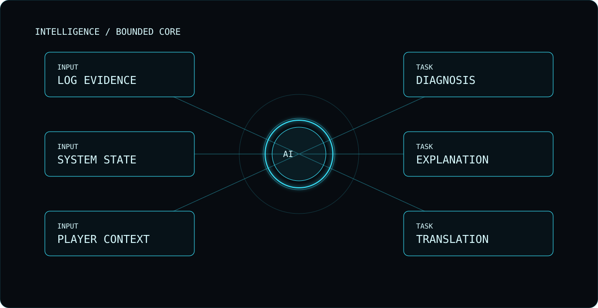

VoidOne Intelligence
Planned optional assistance for diagnostics, configuration, translation and hardware-aware workflows.
PLANNEDVoidOne treats intelligence as a replaceable tool, not a mandatory dependency. Player-facing VoidOne Intelligence is planned; engineering AI repair is already experimental and remains separate from the product.

Planned optional assistance for diagnostics, configuration, translation and hardware-aware workflows.
PLANNEDExperimental CI infrastructure can produce repair candidates, but generated output is treated as untrusted.
EXPERIMENTALAI should be optional and replaceable rather than becoming a mandatory core dependency.
PRINCIPLEUseful assistance should operate on concrete logs, state and reproducible context instead of guessing.
ENGINEERING RULELocal-first architecture keeps player control central when intelligence features are eventually introduced.
DESIGN DIRECTIONThis website's demos are illustrative. They do not inspect your computer or pretend to be a shipped assistant.
WEB DEMOAI-assisted development is useful only when deterministic validation and human review remain the gate.